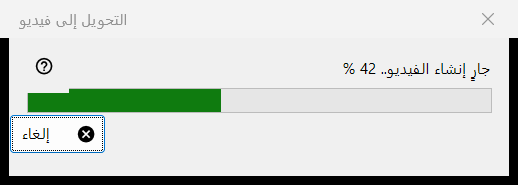
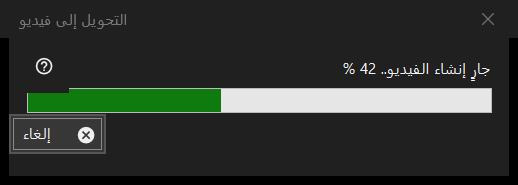

التحويل إلى فيديو
الغرض من هذه النافذة
نافذة التقدم الخاصة بالتحويل إلى فيديو: تحوّل صورة GIF أو WebP أو APNG متحركة إلى MP4 ثم تحذف الأصل. تُفتح بعد أن تؤكد التحويل، وتبقى فوق العارض حتى ينتهي العمل، وفيها زر واحد هو إلغاء.


بهذا الترتيب
- اعرض صورة متحركة.
- اختر تحويل إلى فيديو.. من قائمة الصورة، أو اضغط زر تحويل إلى فيديو في شريط الأدوات؛ كلاهما موجود فقط ما دامت صورة متحركة على الشاشة، ولا يوجد اختصار لوحة مفاتيح.
- اقرأ التأكيد واضغط تحويل.
- إذا طُلب منك تنزيل FFmpeg فأجب نعم.
- راقب الشريط، أو اضغط إلغاء.
- يفتح العارض ملف MP4 الجديد.
عناصر النافذة
بدء التحويل
يُعرض الأمر للصور المتحركة فقط، ولا يُعرض أبدًا لصورة ثابتة أو لفيديو، ويرفضه العارض إذا كانت الحاوية محمية أو كان المكان لا يسمح بالكتابة بجوار الملف. يتوقف التشغيل عند بدء العمل.
التأكيد
نصه: سيتم تحويل الأصل إلى ملف MP4 الجديد، ويُحذف الأصل نهائيًا دون المرور بسلة المحذوفات. وعندما تحتوي الصورة المتحركة على شفافية يضيف: ستُملأ الشفافية باللون الأسود. الإجابة الافتراضية هي إلغاء. ومربع الاختيار لا تسأل مرة أخرى حتى إغلاق البرنامج يدوم فقط حتى يُغلق العارض؛ ولا يُحفظ أبدًا.
FFmpeg
يستخدم التحويل FFmpeg، وهو ليس جزءًا من البرنامج. إذا كان غير موجود فستُسأل مرة واحدة عن التنزيل (يعرض السؤال الحجم؛ ويأتي الملف من موقع المشروع ويُحفظ محليًا، وهو برنامج حر بموجب ترخيص GPL). والإجابة بـ لا توقف العملية هنا ولا يُنشأ أو يُحذف أي شيء.
نافذة التقدم
يقول العنوان جارٍ إنشاء الفيديو.. مع نسبة مئوية، ويتبعه الشريط. وعندما لا يكون طول الصورة المتحركة معروفًا يتحرك الشريط ذهابًا وإيابًا فقط دون رقم. إلغاء ومفتاح Esc وزر الإغلاق تعني كلها الشيء نفسه: تبقى النافذة لحظة حتى يتوقف المرمّز فعلًا، ثم تُغلق ويعلن العارض أُلغي التحويل. ولا يمكن استخدام العارض في هذه الأثناء.
ما تحصل عليه
ملف MP4 في المجلد نفسه وبالاسم نفسه (يُضاف رقم بين قوسين إذا كان الاسم مستخدمًا)، وبمعدل إطارات الصورة المتحركة، بين 1 و50 إطارًا في الثانية. يُكتب باسم مؤقت ثم تُغيَّر تسميته عندما يجهز. ولا يُحذف الأصل إلا بعد أن يوجد ملف MP4 باسمه النهائي وبعد التحقق من أنه يحتوي الصورة المتحركة كاملة. يقول شريط الحالة تم ويعرض العارض الفيديو.
عندما يحدث خطأ
يبقى الأصل ويذكر شريط الحالة السبب: تعذّر إنشاء الفيديو مع السبب، أو تم إنشاء الفيديو لكن تعذّر حذف الأصل، أو تعذّر التحقق من اكتمال الفيديو فأُبقي على الأصل. التشغيل الفاشل يترك الأصل دون مساس، ويزيل الملف المؤقت، ويكتب التفاصيل في السجل.